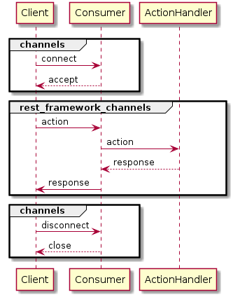

Routing
You can distribute the actions separately using rest_framework_channels’ routing system. Let’s check rest_framework_channels’ sequence diagram again.

As you can see the above diagram, The Consumer send the actions into ActionHandler.
You can define the routing species which ActionHandler will recieve the action.
The definition of the routing is also easy due to the almost same as the original django’s routing one.
The routing is defined inside the AsyncAPIConsumer. Here is the example.
from django.urls import path, re_path
from rest_framework_channels import generics
from rest_framework_channels.consumers import AsyncAPIConsumer
from rest_framework_channels.permissions import IsAuthenticated
from rest_framework_channels.decorators import async_action
class ChildActionHandler(generics.RetrieveAPIActionHandler):
serializer_class = TestSerializer
queryset = TestModel.objects.all()
permission_classes = (IsAuthenticated,)
@async_action
def recieve_path(self, *args, **kwargs):
return {'path': 'handled'}, 200
@async_action
def recieve_repath(self, *args, **kwargs):
return {'repath': 'handled'}, 200
class ParentConsumer(AsyncAPIConsumer):
# You can define the routing inside the consumer similar with original django's urlpatterns
routepatterns = [
path('test_child_route', ChildActionHandler.as_aaah()),
re_path(
r'test_child_route/(?P<pk>[-\w]+)/$',
ChildActionHandler.as_aaah(),
),
]
There are some differences from the original django’s routing system.
First, you should define the routing in routepatterns as class argument in the Consumer.
The Consumer will distribute the action into the correct action’s method you defined using this routepatterns.
Second, you should pass the as_aaah() instead of as_asgi() or as_view() into the path and re_path.
as_aaah() is class method. aaah is abbreviation for Async API Action Handler (not scream 😛). Because this has similar interface with channels asgi and django’s view, you can use the original path and re_path function in django.urls.
Note
We do not support the include function. Shortly, you can’t define the nested routings.
To do this, the separated ActionHandler is the workaround.